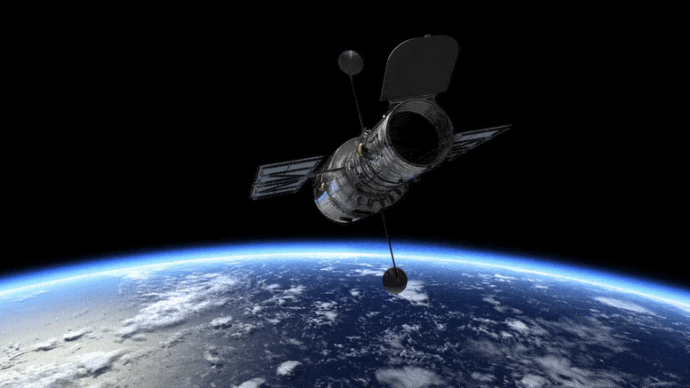

Ever wondered if there is life outside of earth?? What if we are not alone out there... If it is then how they might look like... Would they be more advanced than us??? Can we contact them yet??? All these questions might be answered one day, thanks to our advanced telescopes and satelights....
Telescopes (ground-based) are essential for techniques like direct imaging and radial velocity measurements. Satellites (space-based) like Kepler, TESS, and Gaia excel at finding exoplanets using the transit method, astrometry, and microlensing. These tools, together, have vastly expanded our understanding of the universe, leading to the discovery of thousands of exoplanets, including some potentially Earth-like worlds that could harbor life.
Some crusial telescopes and the planets they discovered:
1]Kepler Space Telescope

The Kepler Space Telescope made significant contributions to the discovery of exoplanets, identifying over 2,600 confirmed planets during its mission. Here are some notable examples:
- Kepler-22b was discovered by NASA's Kepler Space Telescope in 2011.Kepler-22b is located about 600 light-years away in the constellation Cygnus.Kepler-22b lies within the habitable zone of its star, meaning it is at a distance where the temperature could allow liquid water to exist on the surface, assuming the right atmospheric conditions. The surface temperature could be around 22°C (72°F), based on models, but this heavily depends on the composition of the planet's atmosphere.


2]Hubble Space Telescope
The Hubble Space Telescope has contributed to the discovery and characterization of more than 200 exoplanets. While Hubble is not primarily a planet-hunting mission like Kepler or TESS, it has played a crucial role in studying exoplanet atmospheres through transit observations and spectroscopy. Hubble's ability to analyze light passing through a planet's atmosphere has helped identify chemical compositions, including the presence of water vapor and other molecules. Here are some examples:
- Type: HAT-P-11b is classified as a "mini-Neptune" or a Neptune-like gas giant. This means it shares some characteristics with Neptune in our Solar System, such as a gaseous composition and a size larger than Earth but smaller than Jupiter or Saturn. Size and Mass: The planet has a radius about 4.7 times that of Earth and a mass about 26 times greater than Earth. HAT-P-11b has become an important target for atmospheric studies because of its water vapor and possible cloud formations. These discoveries provide insight into atmospheric processes on smaller gas giants, offering a way to compare them with larger gas giants like Jupiter or Saturn, as well as planets within our own solar system.